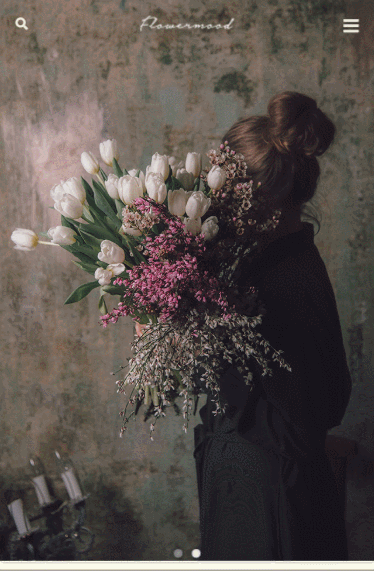
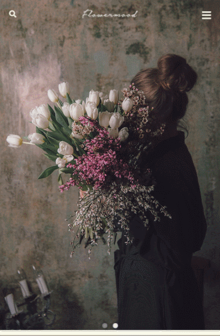

INTRO SECTION
Web Publisher, Hyeongbin Park
Hyeongbin Park's Portfolio
ABOUT SECTION
- JAKE @박형빈
- birth. 1995.06.24
- call. 010-2223-0833
- e-mail. hbpark2@naver.com
반갑습니다! 저는
독서를 사랑하고,
코딩의 끝없는 매력에
흠 - 뻑 빠져버린
웹퍼블리셔 에요.
SKILL SECTION
제가 사랑하는,
그래서 자신있는
일을 소개합니다.
- HTML5
-
웹 접근성과 웹표준을 준수하는 MARKUP
시맨틱 태그를 활용한 시맨틱한 아웃라인 구조 - CSS3
-
미디어쿼리를 이용한 반응형 사이트 제작을 재밌어 해요.
모바일 전용 사이트 제작 (디바이스별 호환) - javascript + jQuery
-
Form 값 유효성 체크
탭, 슬라이드 등의 기능 구현 및 플러그인 사용 - php+mySql
- Form 값 유효성 체크
탭, 슬라이드 등의 기능 구현 및 플러그인 사용 - Wordpress
- Form 값 유효성 체크
탭, 슬라이드 등의 기능 구현 및 플러그인 사용 - Photoshop+Illust
-
이미지 누끼따기, 레이아웃 자르기
간단한 이미지 보정/수정/합성
PROJECT_1 SECTION

FLOWERMOOD DESKTOP
웹사이트 제작
기획의도 : 기존 웹사이트의 산만한 Interface
Image Alt누락으로인한 접근성 부재를 문제점으로 삼아
트렌드에 맞는 UI와 웹 표준을 지향하는
마크업으로 접근성을 고려하여 새롭게 구축하였습니다
- 제작기간
- 2019.12.14 ~ 2020.01.04 (3 WEEK)
- 제작기술
- Adobe Photoshop, Illustrator HTML5/CSS3, Javascript, jQuery, Ajax(Json), php(in clude), 그누보드(게시판) W3C 웹표준 마크업 검사, 웹접근성검사(K-WAH), 크로스브라우징 완료
PROJECT_2 SECTION
 

FLOWERMOOD MOBILE
웹사이트 제작
기획의도 : 기존 웹사이트의 산만한 Interface
Image Alt누락으로인한 접근성 부재를 문제점으로 삼아
트렌드에 맞는 UI와 웹 표준을 지향하는
마크업으로 접근성을 고려하여 새롭게 구축하였습니다
- 제작기간
- 2019.12.14 ~ 2020.01.04 (3 WEEK)
- 제작기술
- Adobe Photoshop, Illustrator HTML5/CSS3, Javascript, jQuery, Ajax(Json), php(in clude), 그누보드(게시판) W3C 웹표준 마크업 검사, 웹접근성검사(K-WAH), 크로스브라우징 완료
PROJECT_3 SECTION

LOVING VINCENT RESPONSIVE
웹사이트 제작
기획의도 : 기존 웹사이트의 산만한 Interface
Image Alt누락으로인한 접근성 부재를 문제점으로 삼아
트렌드에 맞는 UI와 웹 표준을 지향하는
마크업으로 접근성을 고려하여 새롭게 구축하였습니다
- 제작기간
- 2019.12.14 ~ 2020.01.04 (3 WEEK)
- 제작기술
- Adobe Photoshop, Illustrator HTML5/CSS3, Javascript, jQuery, Ajax(Json), php(in clude), 그누보드(게시판) W3C 웹표준 마크업 검사, 웹접근성검사(K-WAH), 크로스브라우징 완료
PROJECT_4 SECTION

TRENDIR WORDPRESS
웹사이트 제작
기획의도 : 기존 웹사이트의 산만한 Interface
Image Alt누락으로인한 접근성 부재를 문제점으로 삼아
트렌드에 맞는 UI와 웹 표준을 지향하는
마크업으로 접근성을 고려하여 새롭게 구축하였습니다
- 제작기간
- 2019.12.14 ~ 2020.01.04 (3 WEEK)
- 제작기술
- Adobe Photoshop, Illustrator HTML5/CSS3, Javascript, jQuery, Ajax(Json), php(in clude), 그누보드(게시판) W3C 웹표준 마크업 검사, 웹접근성검사(K-WAH), 크로스브라우징 완료